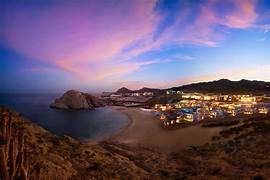
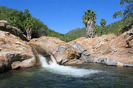
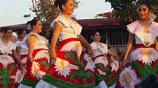
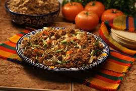

Baja California Sur, un estado que se extiende a lo largo de la península del mismo nombre en el extremo sur de México, es un paraíso terrenal que te cautivará con sus paisajes impresionantes, su rica cultura y su ambiente relajado.

En el extremo sur de la península se encuentra la Reserva de la Biosfera Sierra de la Laguna, un área protegida que alberga una gran diversidad de flora y fauna, incluyendo especies endémicas. Esta reserva es ideal para practicar senderismo, observación de aves y actividades al aire libre, y ofrece impresionantes vistas panorámicas de la península.

En Baja California Sur hay actividades para todos los gustos. Puedes disfrutar de sus playas, practicar deportes acuáticos como el surf y el buceo, hacer senderismo en sus sierras, visitar viñedos, explorar sus pueblos mágicos o simplemente relajarte en un spa.

La gastronomía de la región destaca por sus mariscos frescos y platillos tradicionales como el ceviche y el pescado al mojo de ajo.

Notas relevantes:
Baja California Sur es el estado con menor densidad de población de México.
En Baja
California Sur se encuentra el Cabo San Lucas, uno de los destinos turísticos más populares del mundo.
En
Baja California Sur se encuentra el Valle de Guadalupe, una de las regiones vinícolas más importantes de México.